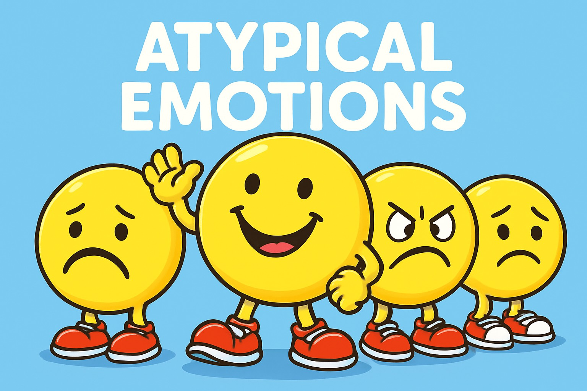
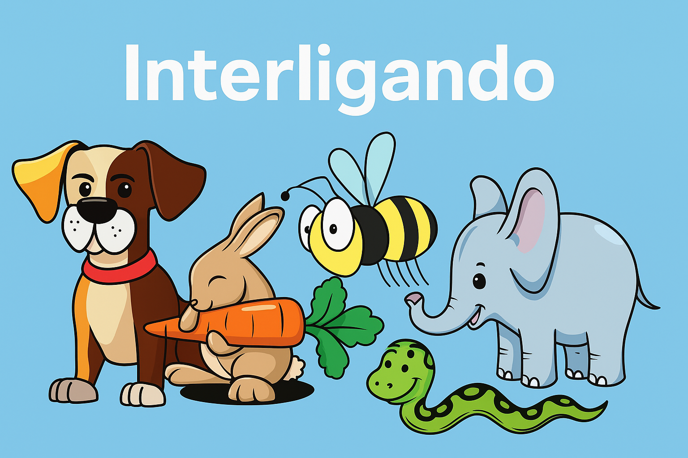
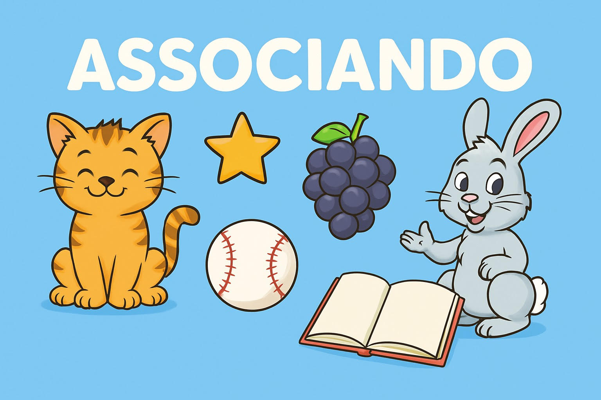

Jogos para praticar, aprender e conversar.
Os minigames nasceram porque informação sozinha nem sempre alcança a criança. Aqui, cada atividade tem objetivo claro, retorno imediato, apoio visual e espaço para mediação de famílias e educadores.

Emoções e autorregulação
Jornada das Emoções
Reconheça emoções, entenda situações e escolha atitudes seguras para comunicar necessidades.
Jogar
Memória visual
Memória das Emoções
Encontre pares e use perguntas de conversa para nomear sentimentos e estratégias.
Jogar
Associação e categorias
Trilha dos Animais
Observe imagens, leia pistas e classifique animais por características e contexto.
Jogar
Letramento visual
Construtor de Palavras
Monte palavras por etapas, use dicas silábicas e transforme vocabulário em frases funcionais.
JogarUso responsável
Os jogos apoiam habilidades educacionais e socioemocionais, mas não substituem acompanhamento profissional. Use em sessões curtas, respeite pausas e valorize tentativa, comunicação e participação.